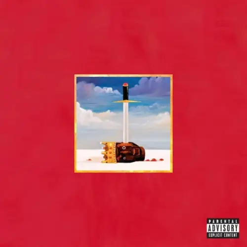

Kanye West er einn af mest umtöluðu tónlistarmönnum í heimi, þekktur fyrir bæði tónlist sína og umdeildar athafnir utan hennar. Hann fæddist 8. júní 1977 í Atlanta, Georgíu, og ólst upp í Chicago. Kanye byrjaði feril sinn sem framleiðandi áður en hann varð frægur fyrir eigin tónlist. Hann hefur verið að brjóta nýja landamæri í hip-hop tónlist og er þekktur fyrir að blanda saman mismunandi stílum, svo sem rap, popp, R&B og tilraunatónlist.
Kanye er líka vel þekktur fyrir persónuleika sinn og þá miklu umræðu sem hann vekur með sínum óhefðbundnu yfirlýsingum og atvikum. Hann hefur margoft verið á forsíðum blaða vegna þess hvernig hann hefur staðið fyrir ákveðnum skoðunum, bæði pólitískum og persónulegum. Dæmi um það er þegar hann kom með stuðning við Donald Trump og þegar hann fór á svið í Grammy-verðlaununum 2009 og rofnaði ræðu Taylor Swift. Slíkar athafnir hafa oft komið í stað tónlistarinnar og gert hann að umfjöllunarefni víða.
"I don't care about having a legacy. I care about making an impact."
-Kanye West
Hér er Kanye að leggja áherslu á að það sem skiptir hann mestu máli er ekki að vera munaður eða þekktur langt eftir að hann er horfinn, heldur að hafa jákvæð og varanleg áhrif á heiminn á meðan hann er lifandi. Þetta gefur til kynna að hann vilji nýta áhrifamátt sinn til að breyta hlutunum og bæta samfélagið, frekar en að einbeita sér að því að byggja upp einhverja "legacy" sem myndi bara vera varðveitt í sögu.
Á síðustu árum hefur Kanye einnig vakið athygli sem tískuhönnuður, sérstaklega með línunni sinni YEEZY, sem er samstarf hans við fyrirtækið Adidas. Hann hefur einnig áhuga á trúarbrögðum, sem má sjá í tónlist og öðrum verkefnum hans síðustu ár.
Kanye West er þannig ekki bara tónlistarmaður, heldur líka menningarleg fyrirmynd sem hefur haft mikla áhrif á poppmenningu, tísku og samfélagsumræðu. Stundum er hann umdeildur og tekur óhefðbundna afstöðu, en það gerir hann líka einstaklega áhugaverðan og óútreiknanlegan.
Efni
Nýjasta tónlistarmyndband Kanye West þar sem dóttir hans North West singur. Allt myndbandið er gert með gervigreind.
Nýleg mynd af Kanye WestMynd af Kanye með börnum sínum
Háskóla tímabilið. 2004 - 2007
Fyrstu þrjár plötur Kanye West, The College Dropout (2004), Late Registration (2005) og Graduation (2007), skutu honum upp á stjörnuhimininn. Þær blönduðu saman sálartónlist, hip-hop og nýstárlegri takta. Plöturnar fjölluðu um drauma, menntun, trú og samfélagsmál og voru gríðarlega vel heppnaðar bæði listrænt og í vinsældum.
Árið 2007 varð persónulegt áfall, þegar móðir hans lést og samband hans við unnustu slitnaði. Þessi erfiða reynsla leiddi til plötunnar 808s and Heartbreak (2008), þar sem Kanye snéri sér frá hefðbundnu hip-hoppi í átt að melankólískum tónum og notaði Auto-Tune til að skapa tilfinningaþrungið og nýstárlegt hljóð. Platan markaði stórt stökk í tónlistarsköpun hans og hafði mikil áhrif á popptónlistina.
The College Dropout - 2004
The College Dropout (2004) er fyrsta plata Kanye West og markaði upphafið að ferli hans sem sólólistamaður. Platan blandaði saman hip-hop, gospeltónum og sálartónlist með tilfinningaþrungnum textum um drauma, trú, menntun og baráttuna við fordóma. Hún var bæði vinsæl og gagnrýnd fyrir frumleika og var hlaðin lögum eins og „Jesus Walks,“ „Through the Wire“ og „All Falls Down.“ Platan styrkti stöðu Kanye sem einn áhrifamesti listamaður nýrrar kynslóðar.
Through the Wire
Late Registration - 2005
Late Registration (2005), önnur plata Kanye West, dýpkaði hljóðheim hans með samstarfi við tónskáldið Jon Brion. Platan blandaði hip-hop við klassíska hljóðfæraleik og stækkaði listræna sýn Kanye. Hún fjallaði um frægð, samfélagsmál og persónulega reynslu. Með lögum eins og „Gold Digger,“ „Touch the Sky“ og „Heard 'Em Say“ varð hún bæði vinsæl og vel metin. Platan fékk fjölda verðlauna og festi Kanye í sessi sem frumlegan og metnaðarfullan listamann.
Touch the Sky
Graduation - 2007
Graduation (2007), þriðja plata Kanye West, markaði nýja stefnu í tónlist hans með meiri áherslu á raftónlist og popptakta. Hún var innblásin af evrópsku tónlistarsenunni og blönduðum áhrifum. Platan var þétt, metnaðarfull og innihélt stórsmelli eins og „Champion,“ „Good Life“ og „Flashing Lights.“ Hún fjallaði um frægð, metnað og persónulega sigra. Graduation var stórt skref í að gera Kanye að alþjóðlegri stórstjörnu og hafði mikil áhrif á þróun hip-hop tónlistar.
Champion
Sorg og Endurkoma. 2009 - 2011
Á þessum árum gekk Kanye West í gegnum miklar persónulegar og faglegar breytingar. Árið 2007 missti hann móður sína, Donda West, sem lést eftir fylgikvilla vegna lýtaaðgerðar. Þetta hafði gríðarleg áhrif á Kanye, sem einnig var að ganga í gegnum sambandsslit við unnustu sína á sama tíma. Hann byrjaði að fjarlægjast fyrri ímynd sína sem glaðvær poppstjarna og þróaði dýpri og melankólískari listræna sýn.
Árið 2009 vakti hann mikla athygli og umdeilur þegar hann truflaði þakkarræðu Taylor Swift á MTV verðlaunahátíðinni, sem skaðaði ímynd hans í fjölmiðlum. Eftir þetta dró hann sig í hlé, flutti til Hawaii og helgaði sig listinni með mikilli vinnu og einangrun. Þetta var tími þar sem hann glímdi bæði við eigin óöryggi og sköpunarþörf, og þessar aðstæður ýttu honum í átt að dýpri sjálfsskoðun.
Þegar hann kom fram aftur var hann orðinn róttækari í tjáningu sinni og áherslunum. Hann myndaði sterkari tengsl við Jay-Z og varð meira en tónlistarmaður - hann leit á sig sem skapandi leiðtoga í mörgum greinum. Á sama tíma áttu fjölmiðlar og almenningur erfitt með að skilja ófyrirsjáanlega hegðun hans og miklar yfirlýsingar, sem leiddu til áframhaldandi deilna. Öll þessi upplifun mótaði Kanye sem listamann og persónu og undirbjó jarðveginn fyrir róttækari hugmyndir og tilraunir í listsköpun hans.
808s & Heartbreak - 2008
808s & Heartbreak (2008) er fjórða plata Kanye West. Hún er þekkt fyrir tilraunakennt hljóð með rafmagni, R&B og Auto-Tune söng. Platan tekur á þungum efnum eins og ástarsorg og missi, sem var áhrif frá því að Kanye missti móður sína. Hljóðheimur hennar, sem byggist á *808* trommu-tónum, hafði mikil áhrif á popp og rapptónlist og breytti þróun tónlistar á komandi árum.
Paranoid

My Beautiful Dark Twisted Fantasy - 2010
My Beautiful Dark Twisted Fantasy (2010) er fimmta plata Kanye West og er oft talin ein af hans bestu verkum. Platan blandar saman rap, rokka, klassískum og rafmagnum áhrifum og tekur á þungum efnum eins og sjálfsvitund, ástarsorg og samfélagslegum vandamálum. Hún fékk mikla lof og var viðurkennd fyrir djúpa tilfinningalega og tónlistarlega heildarverkið. Með lögum eins og Power, Runaway og Monster hefur platan haft gríðarleg áhrif á tónlist og menningu.
Monster
Watch The Throne - 2011
Watch the Throne (2011) er samstarfsplata Kanye West og Jay-Z. Hún sameinar rapptónlist, lúxus og samfélagslegt álit með stórum, mikilfenglegum hljóðheimi. Platan inniheldur lög eins og Otis, No Church in the Wild og Lift Off og var viðurkennd fyrir nýstárlega hljóð og tækni. Hún varð mikill kommersíal árangur og styrkti stöðu bæði Kanye og Jay-Z sem tvö af stærstu nöfnum í tónlistariðnaðinum.
No Chruch in the Wild
Umbreytinginn. 2013 - 2018
Eftir dramatískt tímabil varð Kanye West sífellt djarfari í listrænni tjáningu og persónulegum yfirlýsingum. Hann var orðinn einn umdeildasti en áhrifamesti einstaklingurinn í tónlistarheiminum, og þetta birtist í þróun hans á næstu árum.
Kanye hóf opinbert samband við Kim Kardashian árið 2012, og þau urðu fljótlega eitt þekktasta par heims. Á sama tíma tókst hann á við aukinn þrýsting frægðar og gagnrýni fyrir hegðun sína, en hann virðist hafa nýtt þessa orku í að skapa nýstárlega og hráa list. Hann jók einnig áherslu á tískuhönnun og byggði smám saman upp Yeezy-merkið sitt, sem varð stór hluti af ímynd hans og viðskiptum.
Árið 2016 lenti Kanye í alvarlegu andlegu áfalli. Hann var lagður inn á sjúkrahús vegna þunglyndis og þreytu, en það tímabil hafði mikil áhrif á líf hans og verk. Andleg heilsa hans og óstöðug hegðun urðu sífellt meira í brennidepli fjölmiðla. Þetta leiddi til þess að hann varð opinber um baráttu sína við geðhvarfasýki, sem hann talaði um með blöndu af heiðarleika og mótsögnum.
Þrátt fyrir erfiðleikana hélt Kanye áfram að skapa tónlist sem speglaði þá óreiðu og orku sem einkenndi líf hans. Hann tjáði sífellt róttækari hugmyndir um trú, menningu og samfélag, bæði í verkum sínum og opinberum yfirlýsingum. Á sama tíma glímdi hann við fjölskylduerjur, þar sem hjónaband hans við Kim Kardashian varð sífellt stormasamara og lauk með skilnaði árið 2021.
Þessi ár voru markaðar af bæði mikilli sköpun og deilum, þar sem Kanye sameinaði persónulegar áskoranir og listsköpun til að styrkja sig enn frekar sem ófyrirsjáanlega en óneitanlega áhrifamikla persónu.
Yeezus - 2013
Yeezus (2013) er sjötta plata Kanye West, þekkt fyrir að vera mjög tilraunakennd og ögrandi. Platan blandar saman rap, iðnaðartónlist, pönk og rap-rock, með hráum hljóðum og nýstárlegri framleiðslu. Lögin taka á efnum eins og sjálfsvitund, samfélagslegum óréttlæti og trú. Yeezus fékk bæði lof og gagnrýni fyrir að brjóta viðurkenndar tónlistarhefðir og hefur verið áhrifamikil á þróun nútíma rapptónlistar.
Hold My Liquor
The Life Of Pablo - 2016
The Life of Pablo (2016) er sjöunda plata Kanye West, sem sameinar rap, R&B, gospel og experimental hljóð. Platan var þekkt fyrir sífelldar uppfærslur eftir útgáfu og var meðal fyrstu platna sem notaði streymisþjónustu á svona stóran hátt. Með lögum eins og No More Parties in LA, Saint Pablo og Wolves tekur TLOP á efnum eins og trú, frægð og sjálfsmynd. Hún fékk mikið lof fyrir fjölbreytni og áhrif á tónlistariðnaðinn.
No More Parties in LA
Ye - 2018
Ye (2018) er áttunda plata Kanye West, stutt og persónuleg með aðeins sjö lögum. Hún fjallar um andlega heilsu, fjölskyldu og sjálfskoðun, með opinskárri umfjöllun um eigin baráttu við geðhvörf. Platan blandar saman einföldum og tilraunakenndum hljóðum og fékk bæði lof og gagnrýni fyrir einlægni og hnitmiðaða framsetningu. Lög eins og Ghost Town og Violent Crimes eru meðal helstu verka hennar.
Violent Crimes
Trúartímabilið. 2018 - 2021
Eftir áföll og persónulegar umbreytingar hélt Kanye West áfram að þróast sem einstaklingur og listamaður. Á þessu tímabili fór hann í gegnum mikla andlega og geðræna baráttu, þar sem hann opnaði sig um eigin geðhvarfasýki og krefðist stuðnings. Hann nýtti þessi átök til að skapa nýja tónlist, þar sem sjálfsuppgötvun og persónuleg barátta voru viðfangsefni hans.
Kanye sneri sér að trú og guðfræði, lýsti sér sem kristnum trúboða og fór í gegnum djúpa trúarlega endurnýjun. Á sama tíma var hann í fjölskyldu- og fjölmiðladeilum, þar sem hann deildi skoðunum sínum opinberlega, sem olli bæði umfjöllun og gagnrýni. Samt sem áður hélt hann áfram að nýta tónlistina til að tjá sig um ást, sorg, trú og félagslega spurningar, sem leiddi til bæði djúpra og umdeildra verka.
Kids See Ghosts - 2018
Kids See Ghosts (2018) er samstarfsplata Kanye West og Kid Cudi. Hún sameinar rap, rock og tilraunakennda tóna, með áherslu á sjálfskoðun, andlega heilsu og bata. Platan var mikið lofuð fyrir skapandi hljóðheim og dýpt, með lögum eins og Reborn og 4th Dimension. Hún er talin ein af áhrifamestu samstarfsverkefnum þeirra.
4th Dimension
JESUS IS KING - 2019
Jesus Is King (2019) er níunda plata Kanye West og markar trúarlegt tímabil á ferli hans. Platan blandar saman gospel, rap og tilbeiðslutónlist og leggur áherslu á trú, fyrirgefningu og andlega vakningu. Með lögum eins og Follow God og God Is fékk hún blandaðar viðtökur en hafði mikil áhrif í trúar- og tónlistarheiminum.
Follow God
Donda - 2021
Donda (2021) er tíunda plata Kanye West, tileinkuð minningu móður hans, Donda West. Platan er tilfinningarík og epísk, með blöndu af rap, gospel og tilraunakenndum tónum. Hún fjallar um trú, sorg, fjölskyldu og fyrirgefningu og inniheldur lög eins og Hurricane og Off the Grid. Donda fékk lof fyrir metnað sinn og fjölbreyttan hljóðheim.
Hurricane
Vultures tímabilið. 2024-
Á þessu tímabili hélt Kanye West áfram að takast á við persónulegar áskoranir og breytingar. Hann var í miðju mikils félagslegs og fjölskyldulegs álags, þar sem deilur við fjölmiðla og opinbera einstaklinga héldu áfram. Þá var hann einnig að kljást við erfiðleika í einkalífi, einkum eftir skilnaðinn frá Kim Kardashian. Þetta hafði áhrif á bæði hans sjálfsmynd og tónlistarframleiðslu.
Á þessum tíma einbeitti Kanye sér að nýjum viðskiptum, m.a. hönnun og Yeezy línunni, og þróaði sterka tengingu við samfélagslegar og pólitískar spurningar, sem endurspeglast í tónlist hans. Samhliða þessu fór hann að vinna með öðrum listamönnum og skoðaði nýja listræna möguleika. Hann hélt áfram að nýta tónlist sem miðil til að tjá sig um sína eigin baráttu við sjálfan sig, fjölskyldu og samfélag. Miklar breytingar á lífsstíl hans, ferðalög og samstarf við nýja listamenn, gerðu honum kleift að þróa nýja nálgun á tónlist og listrænan feril.
Í sama ferli, þegar Kanye var að þróa Vultures 2, tilkynnti hann einnig um nýtt verkefni, Bully, sem virðist vera enn meira innilegt og einbeitt. Kanye ákvað að taka stjórn á framleiðslu og útgáfu sjálfur og fór að vinna mest með sjálfum sér, með áhrifum frá sínum persónulegu reynslum og tónlistarviðhorfum. Á þessum tíma var hann einnig á flakki í Japan, þar sem hann fékk innblástur frá umhverfi sínu og öðrum listamönnum, en tengsl við fjölskyldu hans voru í erfiðleikum, sem bættist við álagið sem fylgdi því að vera í miðju fjölmiðlaumræðu um viðbrögð hans og hegðun.
VULTURES 1 - 2024
Vultures (2024) er samstarfsplata Kanye West og Ty Dolla Sign. Hún blandar saman hip-hop, R&B og tilraunakenndum hljóðum með lögum sem fjalla um persónuleg og samfélagsleg efni. Platan inniheldur gestaframlag frá listamönnum eins og James Blake, Playboi Carti og Future. Hún vakti athygli fyrir framsækinn hljóm og frammistöðu, þó hún væri einnig umdeild vegna texta og fyrri ágreinings Kanye.
STARS
VULTURES 2 - 2024
Vultures 2 (2024) er samstarfsplata Kanye West og Ty Dolla $ign. Platan er framhald af fyrri samstarfsverki þeirra, Vultures, sem hlaut blandaðar viðtökur en náði góðum árangri á vinsældarlistum. Vultures 2 var uppfærð í rauntíma með nýjum mixum og viðbótum eftir útgáfu, líkt og Kanye hefur gert áður, eins og með The Life of Pablo. Lagið SKY CITY var gagnrýnd eftir að það kom í ljós að Kanye hafi notað gerfigreind til þess að syngja fyrir sig.
SKY CITY
Bully - 2024
Kanye West tilkynnti nýju sólóplötuna sína, "Bully", á tónleikum í Haikou, Kína. Þar frumflutti hann lagið Beauty and the Beast, sem inniheldur tilfinningaþrunginn texta við mjúkan hljóm. Lagið er sagt vera afgangsefni frá Donda-plötunni frá 2021. "Bully" er væntanleg 11. sólóplata Kanye og markar framhald á fjölbreyttri tónlistarferli hans eftir Donda og samstarfsverkefnið Vultures.